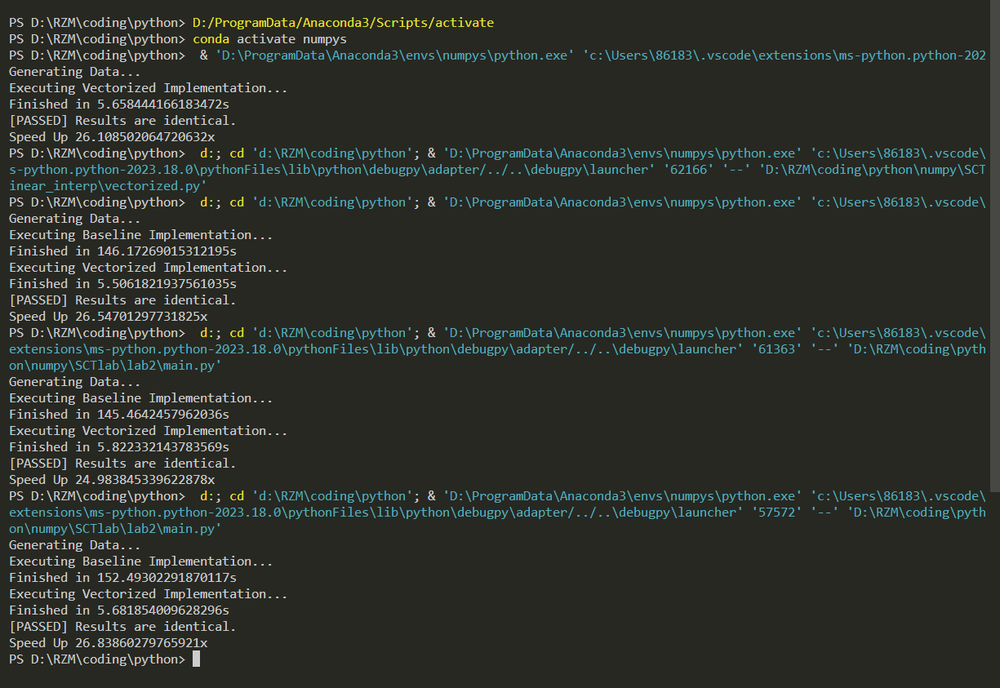

HPC101 Lab2 Report
HPC101 Lab2 report
实验目标
借助 Numpy 实现一个支持批量处理的向量化的双线性插值
实现代码
1 | import numpy as np |
思路
在该线性插值公式中，由于我们取的基准点是整点，并且是包含插值点的最小正方形的四个顶点，可知 $x2-x1=1$ ，$y2-y1=1$ ，因而公式的第一项恒为 1，故我们只需要求出后面三个矩阵乘积的大小。
这个函数要返回的数据是四维数组 $res[N][H2][W2][C]$ ，对于每个不同的 $(n,h2,w2,c)$ ， 维数为 2 且不一定相同，需要用六维的数组存储。而虽然 与 维数都是1，并且与通道序号 $C$ 无关，可以用四维数组存储，但我们为了保证最后的矩阵乘法可以运行，需要保证存储三个矩阵的数组的维数相同，因此决定统一用六维的数组存储这些矩阵。
首先我们应该求出插值点 $(x,y)$ 附近整点的坐标，易知这四个点的坐标分别为 $(\lfloor x \rfloor,\lfloor y\rfloor),(\lfloor x\rfloor,\lceil y\rceil),(\lceil x\rceil,\lfloor x\rfloor),(\lceil x\rceil,\lceil y\rceil)$ ，所以我们可以通过 numpy 的 floor 与 ceil 函数对 b 中数据批量处理得到 $pos1[N][H2][W2][2]$ （存有 $x_1$ 与 $y_1$）和 $pos2[N][H2][W2][2]$ （存有 $x_2$ 与 $y_2$）。然后作差得 $delta1=b-pos1,delta2=pos2-b$ ，再合并成分别存储有行向量与列向量的六维矩阵 $Dx$ 与 $Dy$ 。
接着我们需要求中间的系数矩阵，矩阵中的数值来源于 $a[N][H1][W1][C]$ ，为了与行向量和列向量一一对应，我们需要建立索引数组来把其中的数据按照与 $Dx$ ，$Dy$ 相同的数据顺序取出来。对于每层图像，有 $H2 \cdot W2$ 个插值点，所以构建 index_n=np.arange(N).repeat(H2*W2,axis=0)，而每层的基准点坐标则直接从 $pos1$ 与 $pos2$ 的切片中取得，将数据合并，构建六维数组。
最后执行矩阵乘法，并调整矩阵形状与数据类型，返回结果。
测试：正确性与加速比

| 测试编号 | 正确性 | 基准代码运行时间/s | 向量化代码运行时间/s | 加速比 |
|---|---|---|---|---|
| 1 | Y | 147.7335 | 5.6584 | 26.1085 |
| 2 | Y | 146.1727 | 5.5062 | 26.5470 |
| 3 | Y | 145.4642 | 5.8223 | 24.9838 |
| 4 | Y | 152.4930 | 5.6819 | 26.8386 |
| avg | 100% | / | / | 26.1195 |
调优
使用 time 测试一下每个部分所用的时间，结果如下：
1 | def bilinear_interp_vectorized(a: np.ndarray, b: np.ndarray) -> np.ndarray: |
| id | test 1 | test 2 | test 3 |
|---|---|---|---|
| 0 | 0.000000s | 0.000000s | 0.000000s |
| 1 | 0.169998s | 0.175999s | 0.180998s |
| 2 | 0.065002s | 0.066999s | 0.066001s |
| 3 | 0.076056s | 0.078063s | 0.076253s |
| 4 | 0.084945s | 0.083939s | 0.085745s |
| 5 | 1.203999s | 1.212999s | 1.389002s |
| 6 | 0.428073s | 0.423998s | 0.436043s |
| 7 | 3.228925s | 3.353000s | 3.326474s |
| 8 | 0.074074s | 0.068001s | 0.065000s |
显然，第5步的 fancy index 和第7步的矩阵乘法耗时最长
想法：可以尝试减少数组维数，把前几维数据在执行矩阵乘法前横向展开，减少执行矩阵乘法时数据的深度，也许能加快矩阵乘法的速度
重新编写代码：
1 | def bilinear_interp_vectorized(a: np.ndarray, b: np.ndarray) -> np.ndarray: |
修改 main.py ，与原来的版本进行对比：
| 编号 | 未压缩版本耗时 | 压缩版本耗时 | 整体加速比 | 矩阵乘法加速比 |
|---|---|---|---|---|
| 1 | 6.1774s | 6.0661s | 1.018 | 1.015 |
| 2 | 5.7063s | 5.6795s | 1.005 | 0.997 |
| 3 | 5.6909s | 5.7629s | 0.988 | 0.982 |
| 4 | 6.1859s | 5.7574s | 1.074 | 1.047 |
| 5 | 6.6703s | 5.7098s | 1.168 | 1.160 |
| 6 | 5.8854s | 5.6585s | 1.040 | 1.046 |
测试结果显示，整体优化并不明显，而矩阵乘法的速度提升更不明显，所以执行矩阵乘法时数据的深度与矩阵乘法的速度关系不是很大。（why？）